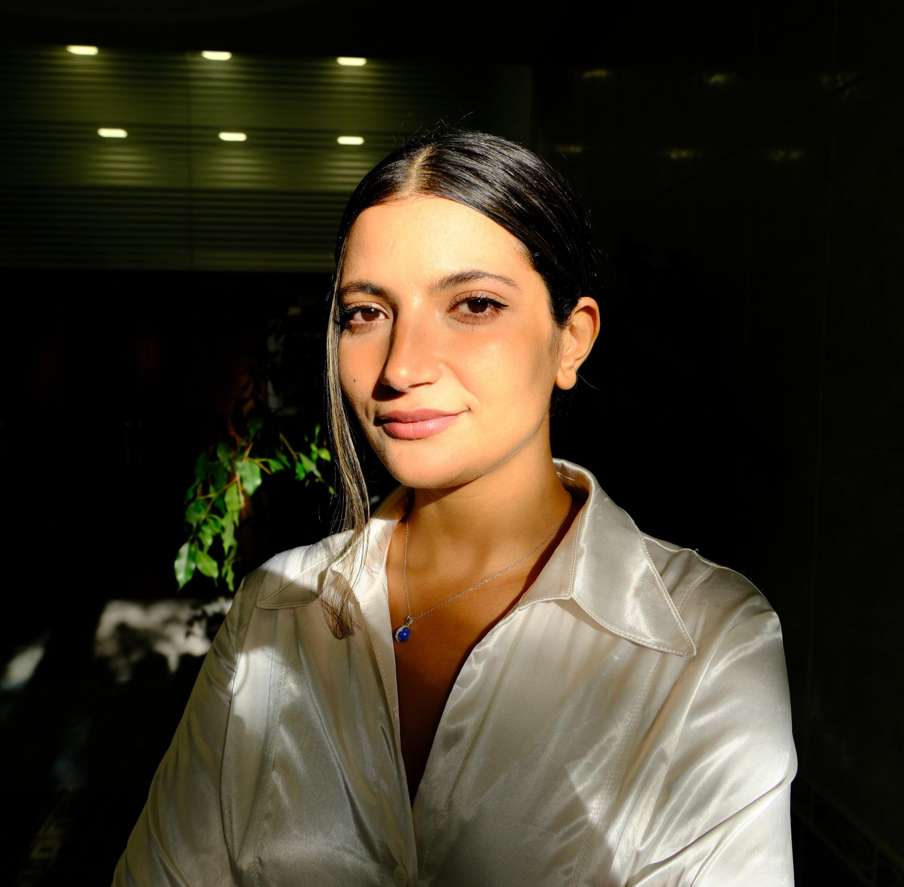

Hi! I'm a Doctor of Philosophy in Computer Science from Clermont Auvergne University. I did my PhD at the LIMOS lab in Clermont-Ferrand in the Information and Communication Systems track with Pascal Lafourcade as my thesis supervisor, and at the Loria lab in Nancy in the Pesto team with Jannik Dreier as my co-supervisor. My thesis is titled "Security Protocol Design and Symbolic Analysis : Hybrid Protocols, Derived Adversary Models, and Refined Equational Theories".
I consider myself a security protocol analyst (or at least, a very ambitious apprentice) with almost 5 years of experience in the field. I have analyzed WireGuard and its Post-Quantum version, PQ-WireGuard; Protocols based on MixNets (including the Estonian e-voting protocol, Haenni e-voting protocol, Remark! e-exam protocol, and the Crypto Santa protocol); the SDNsec protocol; Draft 6 of the EDHOC-PSK; and the Secure Remote Password Protocol. I also participated in the design (and naturally the analysis too—because priorities!) of WireGuard-Hybrid, Applause (an e-ticketing protocol), and SCREX (a verifiable coercion-resistant e-exam protocol).
You’ll find the list of my publications below. So far, I’ve focused on symbolic protocol analysis using formal verification tools such as ProVerif, Tamarin, DeepSec, and the Sapic+ framework, but I’m also open to other approaches, notably computational ones.
If you have any questions or suggestions, feel free to reach out—I’m usually friendly 🙂.
I also hold a Master’s in Information Security and Cryptology from Bordeaux University, and an engineering degree in Mathematical Modeling from the National Engineering School of Tunis. I am passionate about formally analyzing cryptographic protocols. My research focuses on symbolic analysis, privacy properties, and formal verification of protocols.
Paper Title 1 — Journal/Conference — Year
Paper Title 2 — Journal/Conference — Year
Check out my poems here.
Email: your@email.com